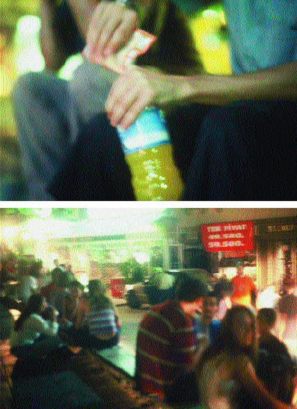

Can Altay, “Minibar”, 2003. “How Latitudes Become Forms: Art in a Global Age” sergisi, Fondazione Sandretto Re Rebaudengo, Torino, İtalya; Walker Art Center, Minneapolis, ABD (2003) / Houston Contemporary Art Museum, ABD (2004) / Monterray, Meksika (2005)